LEVTKVLT

Artists
Agon
Bandcamp
Arra
Bandcamp
Choose Death
Bandcamp
Deitritus
Instagram
Jinn
Bandcamp / Instagram
Catalog
TBA: Deitritus & Jinn - "Split"
LK13: Choose Death - "the more you learn the worse it gets. this is not a song this is a cry for help."
October 25, 2022, digital - Bandcamp
A fitting conclusion.
LK12: Arra - "Arra"
October 23, 2022, digital - Bandcamp
Black metal and dungeon synth.
- Hafnium Skin (3:10)
- Haaiah's Court (0:36)
LK11: Choose Death - "A Compliation of Drones"
August 19, 2022, digital - Bandcamp
Previously released drone metal tracks.
- Grisdinteation Pogsronser (6:00)
- The Queen of Swords and the Hermit (8:35)
- Fresh Air (8:58)
- Cue the Sun (7:04)
- Sinking (5:00)
LK10: Choose Death - "Grisdinteation Pogsronser"
October 21, 2021, digital - Bandcamp
Drone metal and free jazz.
- Grisdinteation Pogsronser (6:00)
LK9: Choose Death - "apoplaxis"
October 5, 2021, digital - Bandcamp
Revenge noise.
- apoplaxis 1 (1:41)
- apoplaxis 2 (2:02)
- apoplaxis 3 (1:42)
- apoplaxis 4-7 (3:44)
LK8: Choose Death - "Cue the Sun"
June 4, 2020, digital - Bandcamp
Cover song originally by Forgive Durden.
- Cue the Sun (7:04)
LK7: Choose Death - "Quarantine Demos"
April 6, 2020, digital - Bandcamp
Demos made in isolation.
- The Queen of Swords and the Hermit (8:35)
- The Seraph Hath Uncovered its Eyes (3:54)
- Fresh Air (8:58)
LK6: Agon & Choose Death - "Parched Prophet"
November 22, 2019, digital - Agon Bandcamp; Choose Death Bandcamp
Split EP.
- Parched (Choose Death) (8:17)
- Prophet (Agon) (8:44)
LK5: Choose Death - "Petroglyphs"
November 16, 2019, digital - Bandcamp
An autobiography.
- ...And You Will be Like God (2:06)
- Pathognomonic Fever (4:31)
- The Conscious Void (6:18)
- The Crushing Weight of a New Perspective Every Day (5:51)
- By the Tree from which You Hang (9:06)
- 1997 (14:49)
LK4: Choose Death - "What the Fuck Happened to Me in My Childhood?"
August 10, 2019, digital - Bandcamp
A collection of early demos and experiments from 2012-5.
- Death is for the Living (4:20)
- George (3:11)
- Vǫlva Danzleikr (7:19)
- Augu Fyrir Huga Hennar (14:35)
- Móti Ragnarǫkum (8:46)
- Ung (3:07)
- III (7:53)
- Illa Tiðandi (10:38)
- Inspire through Suffering Motivate with Fear (4:12)
- Ave Satanas (6:56)
- IV (18:48)
- I (9:48)
- Sylvia (17:38)
LK3: Choose Death - "Scaling the Tumulus"
June 15, 2019, digital - Bandcamp
Drone metal.
- Sinking (5:00)
- Waiting (4:54)
- Rebuilding Willpower One Step at a Time (18:01)
LK2: Choose Death - "Wir Sind Götter / Gott ist der Mensch"
May 8, 2014, digital - Bandcamp
Ritual evocation of God within the self.
- Summoning Marduk (1:08)
- Ninib, Horned One of Silence (6:20)
- Ol Sonuf Vaoresaji (6:09)
- Great Sleeping Serpent (11:45)
LK1: Choose Death - "Hell Around You"
February 5, 2014, digital - Bandcamp
A study of infrasound and harsh noise.
- I (9:48)
- II (3:05)
- III (7:53)
- IV (18:48)
- V (5:14)